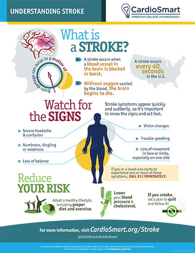

Stroke: Knowing the Signs Saves Lives
A stroke happens when blood flow to part of the brain is blocked or when a blood vessel in the brain bursts. Because the brain is starved of oxygen, brain cells begin to die within minutes — so a stroke is an emergency. Every minute without treatment increases permanent damage; the saying “time is brain” captures how urgent this is.
Think FAST
If you see any of these in yourself or someone else, call 911 immediately:
- F — Face: Does one side of the face droop? Ask the person to smile.
- A — Arms: Is one arm weak or numb? Ask the person to raise both arms.
- S — Speech: Is speech slurred or strange? Ask the person to repeat a simple sentence.
- T — Time: Time to call 911. Record the time symptoms started — it matters for treatment.
Two Types of Stroke
| Type | What happens | Share of strokes |
|---|---|---|
| Ischemic | A blood clot blocks an artery to the brain, cutting off blood (and oxygen). | About 87% |
| Hemorrhagic | A blood vessel in or around the brain ruptures and bleeds into the brain. | About 13% |
Both are emergencies. Treatment differs, which is why imaging (CT or MRI) is done right away.
The Warning Signs
Beyond the FAST check, other signs of a stroke can include sudden:
- Weakness or numbness of the face, arm, or leg — especially on one side of the body
- Confusion, or trouble understanding speech
- Trouble seeing in one or both eyes
- Trouble walking, dizziness, or loss of balance or coordination
- Severe headache with no known cause
Many of these mirror conditions a cardiologist treats, because heart and brain vascular disease share the same risk factors.

Why Heart Conditions Raise Your Risk
Two heart-related conditions deserve special attention because they make stroke far more likely:
Atrial fibrillation (AFib)
In AFib, the atria quiver instead of contracting, blood can pool and clot, and a clot can travel to the brain. AFib roughly raises stroke risk fivefold, and AFib-related strokes tend to be more severe. If you have AFib, taking the blood thinner recommended by your doctor dramatically lowers this risk. (See our atrial fibrillation page.)
High blood pressure
Hypertension is the number one treatable risk factor for stroke. It damages and weakens blood vessels over time and raises the risk of both blocked-vessel and bleeding strokes. Controlling blood pressure is one of the most powerful strategies for preventing stroke, and the same lifestyle and medication steps used for heart disease protect the brain. (See our hypertension page.)
Other conditions that raise stroke risk include diabetes, high cholesterol, smoking, obesity, carotid artery narrowing, and a past transient ischemic attack.
What Is a Transient Ischemic Attack (TIA)?
A TIA (“mini-stroke”) causes stroke-like symptoms that resolve on their own, usually in minutes to hours. It means blood flow to the brain was briefly blocked but then re-opened. A TIA is a major warning sign: it increases the chance of a full stroke, often soon afterward. Report any TIA symptoms to your doctor urgently, even if they pass — it is a chance to act (and often to start a blood thinner) before a real stroke happens.
How It Is Treated
Emergency treatment depends on the type and timing of the stroke:
- For ischemic stroke: a clot–dissolving medication (alteplase/tenecteplase) can be given to break the blockage — it works best when started within a few hours. For large blockages, a procedure (mechanical thrombectomy) can physically remove the clot.
- For hemorrhagic stroke: treatment focuses on controlling bleeding and pressure, sometimes with surgery or procedures to stop bleeding vessels.
- Longer term: blood thinners or antiplatelets, blood pressure and cholesterol control, and rehabilitation (physical, speech, and occupational therapy) to recover function.
Because treatment options depend on how soon you arrive, every minute counts. Do not wait to see whether symptoms pass — call 911.
Lowering Your Risk
- Control blood pressure — the leading treatable risk factor.
- If you have AFib, take your prescribed blood thinner as directed.
- Don't smoke.
- Manage diabetes and cholesterol.
- Stay active and eat a heart-healthy diet.
- Limit alcohol.
- Treat sleep apnea.
- Never ignore a TIA — report it to your doctor right away.
Key Takeaways
- Stroke is an emergency — time lost is brain lost.
- Remember BE FAST to recognize it.
- AFib and high blood pressure are two of the greatest cardiovascular drivers of stroke — both are very treatable.
- A TIA is a loud warning sign, not a reason to relax.
Reliable Sources
- CardioSmart (American College of Cardiology), Stroke — infographic
- American Heart Association, Stroke Warning Signs
- CDC, About Stroke
This page is for general education only and does not replace advice from your doctor. In an emergency, always call 911.